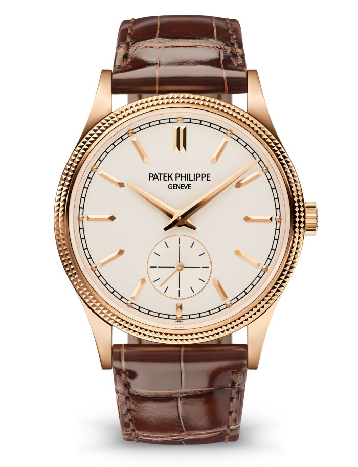

|  | ||
|---|---|---|
WATCH: Self-winding mechanical movement. Caliber 324 S C.
Date in an aperture. Sweep seconds hand.
Self-winding mechanical movement. Caliber 324 S C.
Date in an aperture. Sweep seconds hand.
DIAL: Blue opaline, gold applied hour markers and numerals
with luminescent coating.
CASE: Steel. Sapphire crystal case back. Water-resistant to 60 m.
Case diameter (10–4 o’clock): 35.2 mm.
Height: 8.62 mm.
GEMSETTING: 56 diamonds: ~0.67 ct. (bezel).
BRACELET: Steel. Nautilus fold-over clasp.
|
||
A SLIGHTLY LARGER DIAMETER WITH NEW DIAL COLORS
The Ladies Automatic Nautilus in steel with diamond-set bezel
asserts its presence on the wrist with a slightly larger diameter
(35.2 mm instead of 33.6 mm). Patek Philippe has also revised
its range of dial colors, introducing blue opaline, silvery opaline
or gray opaline, grading to black at the periphery.
The steel bracelet comes with a fold-over clasp, endowed with a new
adjustment system, providing the wearer with between 2 and 4 mm of
extra bracelet length for increased comfort.
|
||